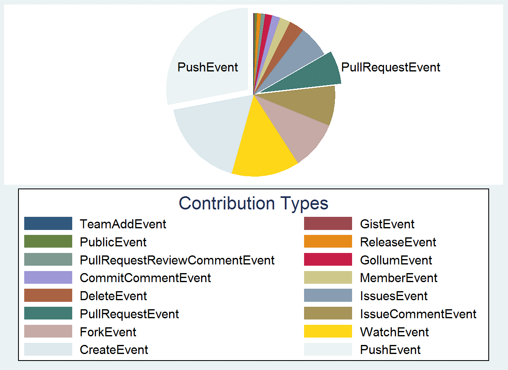

Warrington Data Science Center
Warrington Data Science Center is an academic research center focused on novel and innovative applications of data analytics and big data for businesses
Warrington College of Business Administration

KnowledgeMap
In order to empirically examine the evolving filed of Information Systems, we mapped the field based on thousands of articles, using large scale text mining and network analysis. The results provide new insights to scholars and practitioners.

Social Coding
“Why would thousands of top-notch software developers contribute for free to the creation of a public good?” Using a longitudinal data set containing information on over 5 million OSS developers and their social interactions while working on more than 4 millions OSS projects over 7 years, we empirically investigate the effect of social factors in OSS developers’ contribution patterns.
